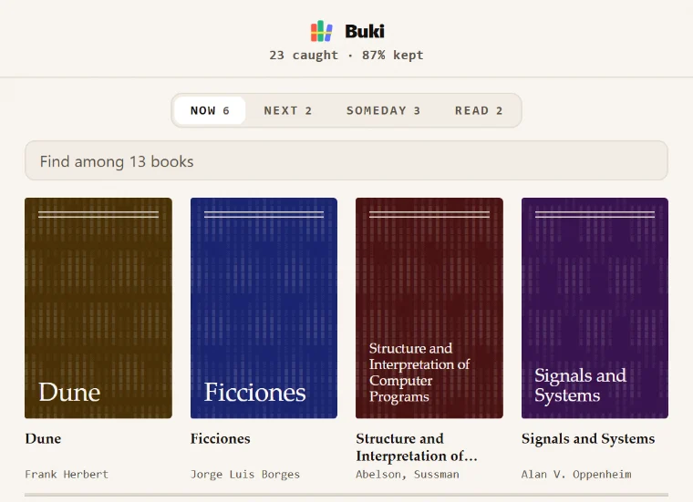

Your shelf
Books stand face out, the way they do in a shop.

It reads the picture, not the caption
Press the book icon in the post's action bar, or right-click the cover. Buki sends the photo and the post's words to a vision model together, because the caption is often what makes a hard cover legible, then checks the answer against OpenLibrary.
One photo can hold several books
A stack on a desk, a shelf behind someone's head. Each book it can read gets its own row and its own decision, or you take the lot at once.
Nothing is saved until you say so
You pick Now, Next or Someday. A book you already have says so, and says which pile it is in, before you touch anything. A cover with no art gets one Buki draws from the book itself.
Your data
There is no Buki server to send it to.
Your shelf never leaves your computer. Two things are sent anywhere: the image you asked Buki to identify, which goes to the vision provider you configured with your own key, and the recognised title, which goes to OpenLibrary to confirm the book exists. No account, no analytics, no sync. Read the privacy policy.
Affiliate disclosure. Saved books carry a Buy link. As an Amazon Associate, Buki earns from qualifying purchases, at no extra cost to you. The link appears only on books you have already chosen to save, and it never changes which books Buki shows you or in what order. You can point it at Bookshop.org instead, which supports independent bookshops.